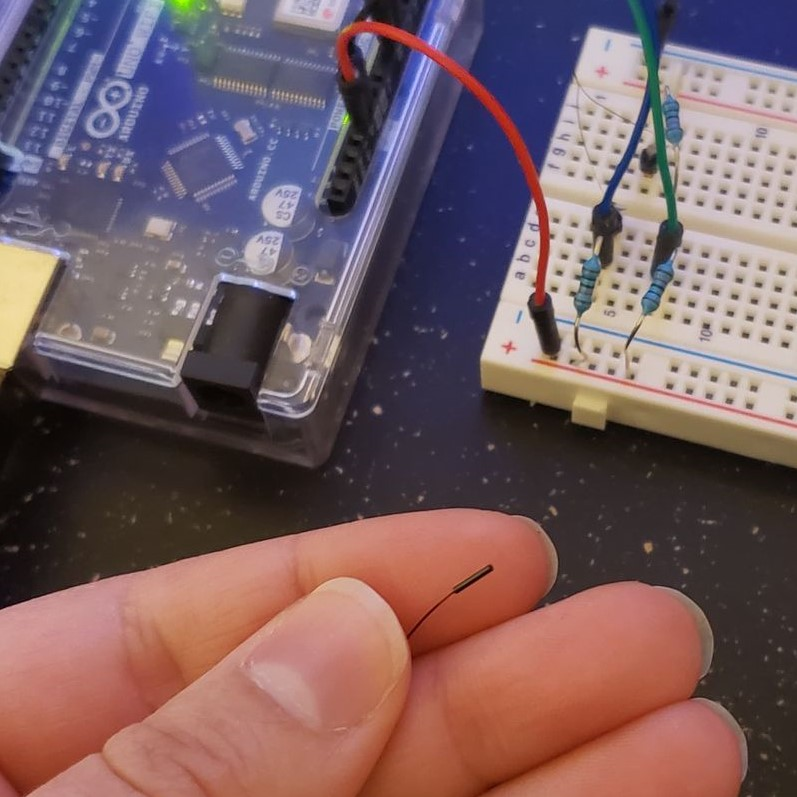
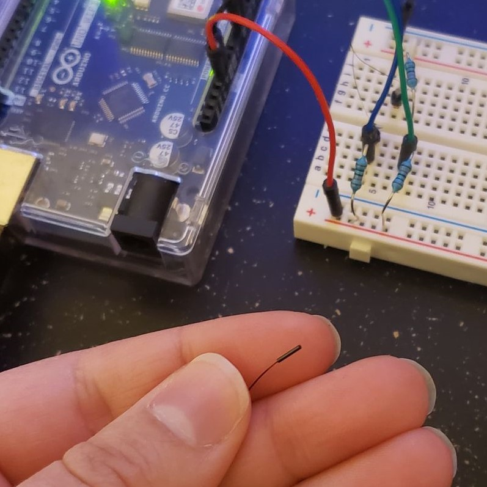

An introduction to the team
Jan 20, 2021
So who are the brains behind Bee's Knees? Let's introduce ourselves. This group is made up of three Mechatronics Engineering students, Raveena D'Souza, Tia Headworth, and J Reinstein. Our goal is to address surgery recovery pertaining to the knee joints.
Update 1: Purchases
Jan 22, 2021
To begin prototyping, we've purchased some materials! Some of these include an Arduino and a kit, some sensors (thermistors and encoders), and a battery pack. These materials will help us build the prototype for the Bee's Knees project.
Update 2: Temperature sensing
Feb 10, 2021
In this post you can see our temperature sensing circuit. The thermistor we chose is a medical grade thermistor designed for skin surface measurements. This part of our project utilizes a Wheatstone bridge configuration to measure the resistance of our thermistor. Using the table from the datasheet of our sensor we produced a line of best fit to relate the resistance to the temperature and used this relationship to calculate our temperature readings. In a simple test you can see our temperature readings rise in response to a warm breath on the sensor.

 

About Us


We are a team of Mechatronics Engineering students passionate about addressing the issues with joint recovery after surgery.